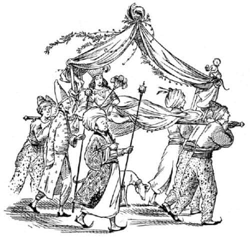
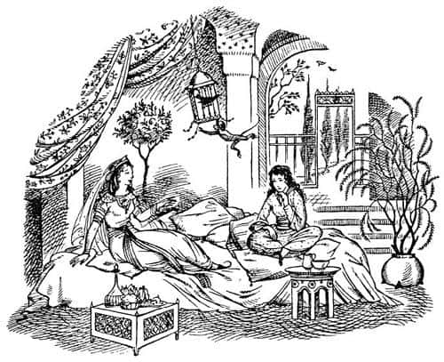

Aravis Tashbaan’da
Gerçekte olanlar şöyleydi: Aravis, Shasta’nın Narnialılar tarafından apar topar götürüldüğünü görünce, kendini akıllıca hiçbir şey söylemeyen iki atla baş başa buldu, ama bir an bile soğukkanlılığını kaybetmedi. Bree’nin dizginlerini kavradı ve iki atı da tutarak kıpırdamadan dikildi; kalbi bir çekiç gibi kuvvetle çarpmasına karşın bunu belli etmemeye çalıştı. Narnialı lordlar geçer geçmez, yeniden harekete geçmeyi denedi. Fakat bir adım bile atmadan bir başka tellalın (“kahrolsun bu insanlar” diye düşündü) “Yol açın, yol açın, yol açın, Tarkheena Lasaraleen’e yol açın” diye bağırdığı duyuldu. Tellalın hemen ardından dört silahlı köle ve dört hamalın taşıdığı, ipek perdeleri titreşen, gümüş zilleri çıngırdayan ve bütün caddeyi çiçek ve parfüm kokularına boğan bir tahtırevan göründü. Tahtırevanın arkasından zarif giysiler içinde kadın köleler, sonra birkaç uşak, çığırtkanlar, ulaklar ve çeşitli hizmetkârlar geliyordu. Aravis, işte o zaman ilk hatasını yaptı.

Lasaraleen’i – sanki okula beraber gitmişler gibi – oldukça iyi tanırdı. Sık sık aynı evlerde beraberce kalmışlar, aynı davetlere katılmışlardı. Lasaraleen, gerçekten önemli bir kişiydi. Şimdi evlenmişti. Aravis onu görebilmek için bakmaktan kendini alamadı.
Bu bir talihsizlikti. İki kız göz göze geldiler ve Lasaraleen, tahtırevanda doğrulup avazı çıktığı kadar bağırdı.
“Aravis! Ne işin var burada Allah aşkına? Baban—”
Kaybedecek bir an bile yoktu. Bir saniye bile geçmeden Aravis atları bıraktı, tahtırevanın kenarına yapıştı, kendini Lasaraleen’in yanına çekerek öfkeyle onun kulağına fısıldadı:
“Kapa çeneni! Duydun mu? Kapa çeneni! Beni gizlemelisin. Adamlarına söyle—”
“Fakat sevgili—” diye başladı Lasaraleen yine aynı yüksek sesle. (İnsanların ona bakmasına biraz olsun aldırmıyordu; aslında bundan hoşlanıyordu.)
“Dediğimi yap yoksa seninle bir daha asla konuşmam” diye fısıldadı Aravis hiddetle. “Lütfen, lütfen çabuk ol, Las. Bu son derece önemli. Adamlarına o iki atı beraberlerinde getirmelerini söyle. Tahtırevanın bütün perdelerini kapat ve beni bulamayacakları bir yere git. Hadi, acele et.”
“Tamam tatlım” dedi Lasaraleen tembelce sesiyle. “Hey ikiniz… Tarkheena’nın atlarını getirin.” (Kölelere söylenmişti bunlar.) “Şimdi doğru eve. Böyle bir günde perdelerin kapanmasını gerçekten istiyor muyuz sevgili dostum? Demek istiyorum ki—”
Fakat Aravis, kendisini ve Lasaraleen’i, gösterişli ve oldukça boğucu türden parfümlü çadıra hapsedecek şekilde perdeleri şimdiden kapatmıştı.
“Görülmemem gerekiyor” dedi. “Babam burada olduğumu bilmiyor. Kaçıyorum.”
“Sevgili dostum, ne kadar da heyecanlı” dedi Lasaraleen. “Hikâyeni duymak için can atıyorum. Tatlım, giysimin üzerine oturuyorsun. Zahmet olmazsa… Böyle daha iyi. Yeni bir giysi. Beğendin mi? Şeyden aldım—”
“Of Las, ciddi ol” dedi Aravis. “Babam nerede?”
“Bilmiyor muydun?” dedi Lasaraleen. “Burada elbette. Şehre dün geldi ve her yerde seni soruyor. İkimizin burada beraber olduğunu ve onun bunu bilmediğini düşünmek! Bu duyduğum en gülünç şey.” Ve kıkırdamaya başladı. Aravis’in hatırladığına göre, Lasaraleen hep kıkır kıkır gülerdi.
“Hiç de gülünç değil” dedi Aravis. “Bu, son derece ciddi. Beni nerede saklayabilirsin?”
“Hiç de zor değil sevgili dostum” dedi Lasaraleen. “Seni eve götüreceğim. Kocam uzaklarda ve seni kimse görmez. Öfff! Perdeler kapalıyken hiç eğlenceli değil. İnsanları görmek istiyorum. Böyle perdeler kapalı bir şekilde gideceksek, insanın yeni giysi giymesinin hiçbir anlamı yok ki.”
“Bana öyle bağırdığında, umarım kimse seni işitmemiştir” dedi Aravis.
“Hayır, elbette hayır sevgili dostum” dedi Lasaraleen dalgınca. “Henüz bana giysim hakkında ne düşündüğünü söylemedin.”
“Bir şey daha var” dedi Aravis. “Adamlarına, o atlara çok iyi bakmalarını söylemelisin. Sırrımın bir kısmı bu. Onlar Narnialı Konuşan Atlar.”
“Yok canım!” dedi Lasaraleen. “Ne ilginç! Ha, tatlım, Narnialı barbar Kraliçe’yi gördün mü? Şimdilik Tashbaan’da kalıyor. Prens Rabadash’ın ona delicesine âşık olduğunu söylüyorlar. Son iki haftadır muhteşem davetler, av partileri ve bunun gibi şeyler düzenlendi. Bence o, anlatıldığı kadar güzel değil. Ama Narnia erkeklerinin bazıları çok hoş. Evvelki gün nehirde bir davete gitmiştim ve giydiğim giysi—”
“Adamlarının, evinde dilenci bir yumurcak gibi giyinmiş bir ziyaretçi olduğunu herkese söylemesini nasıl önleyeceğiz? Kolayca babamın kulağına gidebilir.”
“Telaşlanmana hiç gerek yok tatlım” dedi Lasaraleen. “Kısa sürede sana uygun bir giysi buluruz. İşte geldik!”
Hamallar durmuştu ve tahtırevanı yere indiriyorlardı. Perdeler açıldığında Aravis, kendini birkaç dakika önce Shasta’nın götürüldüğü, şehrin bir başka bölümündeki yere çok benzeyen bir avlu-bahçede buldu. Lasaraleen hemen içeriye girecekti, fakat Aravis telaşlı bir fısıltıyla ona, kölelerin, ev sahibesinin tuhaf ziyaretçisi hakkında kimseye bir şey anlatmamaları için bir şeyler söylemesini hatırlattı.
“Özür dilerim tatlım, aklımdan çıkıvermiş” dedi Lasaraleen. “Hey, sizler! Ve sen de kapıcı. Bugün kimse evden dışarı çıkmayacak. Ve bu genç bayan hakkında konuşurken yakalanan kişi önce öldüresiye dövülecek, sonra altı hafta boyunca sadece ekmek ve su verilecek, sonra da diri diri yakılacak. O kadar.”
Lasaraleen, Aravis’in hikâyesini öğrenmek için can attığını söylemişti. Ancak dinlemek istediğine dair hiçbir belirti göstermiyordu. Aslında o, iyi bir dinleyici değildi. Konuşmayı severdi. Aravis’in uzun ve lüks bir banyo (Calormen banyoları meşhurdu) yapmasında ısrar etmiş, sonrasında ona en zarif giysileri giydirmeden önce hiçbir şeyi anlatmasına izin vermemişti. Giysileri seçmek için yaptığı yaygara, Aravis’i neredeyse delirtmişti. Lasaraleen’in hep böyle olduğunu, giyimle, davetlerle ve dedikoduyla ilgilendiğini hatırlamıştı. Aravis ise her zaman ok ve yay, atlar, köpekler ve yüzmeyle daha çok ilgilenmişti. Tahmin edersiniz ki, her ikisi de birbirlerinin gülünç olduğunu düşünüyordu. Fakat yemekten sonra (genellikle krema, jöle, meyve vb. soğuk şeylerdi) beraberce (Lasaraleen’in sürekli sağa sola tırmanan şımarık maymunu olmasa, Aravis’in daha çok hoşlanacağı) güzel sütunlu bir odada oturduklarında Lasaraleen ona, neden evden kaçtığını sordu.
Aravis hikâyesini anlatmayı bitirdiğinde Lasaraleen, “Ama tatlım, neden Ahoshta Tarkaan’la evlenmiyorsun? Herkes onun için deli oluyor. Kocam onun, Calormen’in en büyük adamlarından biri haline gelmeye başladığını söylüyor. Yaşlı Axartha öldüğü için, şimdi başvezir yapıldı. Bilmiyor muydun?”
“Fark etmez. Onu görmeye bile dayanamıyorum” dedi Aravis.
“Fakat tatlım bir düşün! Üç saray ve bunlardan biri Ilkeen Gölü’ndeki o güzel saray. Dizi dizi incilerden söz ediyorlar. Eşek sütü banyoları… Ve benimle o kadar sık görüşebilirsin ki.”
“Beni ilgilendirmiyor, incileri ve sarayları onun olsun” dedi Aravis.
“Sen her zaman tuhaf bir kızdın Aravis” dedi Lasaraleen. “Daha ne istiyorsun ki?”
Yine de sonunda Aravis, arkadaşını samimi olduğuna inandırdı, hatta planlarını bile anlattı. Artık, iki atı kuzey kapısından dışarı çıkarıp mezarlara götürmek zor olmayacaktı. Kimse, bir savaş atıyla, bir hanımın binek atını nehre götüren, iyi giysiler giymiş bir uşağı durdurup sorgulamazdı. Ayrıca Lasaraleen’in görevlendireceği birçok uşağı vardı. Aravis’in ne yapacağına karar vermek o kadar kolay değildi. Tahtırevanda perdeleri kapatarak gidebileceğini ileri sürdü. Fakat Lasaraleen, tahtırevanların sadece şehirde kullanıldığını ve kapıdan dışarı çıkan bir tahtırevanın kesinlikle dikkat çekeceğini söyledi.
Uzun süre konuştuktan sonra – epeyce uzun bir süreydi çünkü Aravis arkadaşının dikkatini toplamakta zorlanıyordu – Lasaraleen sonunda ellerini çırptı ve “Oh, bir fikrim var” dedi. “Kapıları kullanmadan şehirden çıkmanın bir yolu var. Tisroc’un bahçesi (ömrü uzun olsun) nehrin kıyısına kadar iner ve orada küçük bir su kapısı vardır. Kuşkusuz sadece saray halkı için, ama bilirsin ki sevgili dostum” (burada biraz kıkırdadı) “biz de saraylı sayılırız. Bana geldiğin için şanslısın derim. Sevgili Tisroc (ömrü uzun olsun) o kadar naziktir ki. Hemen her gün saraya çağrılırız ve sanki ikinci evimiz gibidir. Sevgili prens ve prenseslerin hepsini severim. Hele Prens Rabadash’a gerçekten taparım. Saray kadınlarının herhangi birini geceleyin ya da günün herhangi bir saatinde ziyaret edebilirim. Karanlık bastıktan sonra seninle içeri sızıp, neden seni su kapısından dışarı çıkarmayayım ki? Dışarıda her zaman kayık ve benzeri şeyler bağlıdır. Ayrıca yakalansak bile—”
“Her şeyi yitirmiş oluruz” dedi Aravis.
“Ah tatlım, o kadar heyecanlanma” dedi Lasaraleen. “Diyecektim ki, yakalansak bile herkes bunun benim delice şakalarımdan biri olduğunu sanır. Böyle şakalarla oldukça meşhur oldum. Yalnız evvelki gün – dinle tatlım, bu müthiş gülünç—”
“Ben her şeyi kaybederim, demek istedim” dedi Aravis sertçe.
“Oh – ah – evet ne demek istediğini anlıyorum. Eee, daha iyi bir planın var mı?”
Aravis bunu düşünmemişti. “Hayır. Bu riski almak zorundayız. Ne zaman harekete geçeceğiz?” diye cevapladı.
“Oh, bu gece olmaz” dedi Lasaraleen. “Hayır, bu gece olmaz. Bu gece büyük bir ziyafet var (o nedenle birkaç dakika sonra saçımı yapmaya başlamalıyım) ve her yer ışıklarla pırıl pırıl olacak. Öyle kalabalık olacak ki! Yarın gece harekete geçebiliriz.”
Bu, Aravis için kötü bir haberdi, ama elden ne gelirdi ki. Öğleden sonra vakit geçmek bilmemişti. Lasaraleen ziyafete gitmek üzere dışarı çıktığında biraz olsun rahatlamıştı, çünkü Aravis onun kıkırdamasından, skandallar, nişanlar, davetler, düğünler ve giysilerden söz etmesinden çok sıkılmıştı. Erkenden yatağa girdi ve bu çok hoşuna gitti; yeniden yastık ve çarşaflarda uyumak o kadar güzeldi ki.

Ne var ki ertesi gün de geçmek bilmedi. Lasaraleen, tüm planı yeniden gözden geçirmek istedi. Bu arada Aravis’e, Narnia’da kötü ruhların ve büyücülerin yaşadığını, sürekli kar ve buzla kaplı bir ülke olduğunu ve oraya gitmeyi düşündüğü için deli olduğunu tekrarlayıp durdu. “Ve de köylü bir çocukla!” diye ekledi Lasaraleen. “Düşün bir kere tatlım. Hoş değil.” Aravis de bunu epeyce düşünmüştü, fakat Lasaraleen’in gülünçlüğünden öylesine bıkmıştı ki, ilk kez, Shasta ile yolculuk etmenin, Tashbaan’daki soyluların yaşantısından daha eğlenceli olduğunu düşünmeye başlamıştı. “Narnia’ya ulaştığımızda, benim önemli biri değil, sadece onun gibi biri olacağımı unutuyorsun. Her neyse, söz verdim” diye cevaplamakla yetindi.
“Ayrıca” dedi Lasaraleen ağlamaklı bir halde, “sağduyulu olsaydın Başvezir’in karısı olabilirdin!”
Aravis, atlarla özel olarak konuşmak üzere uzaklaştı. Onlara, “Günbatımından az önce, bir uşakla mezarlara gitmeniz gerekiyor” dedi. Artık o çuvallar olmayacak sırtınızda. Yeniden eyerlenip dizginleneceksiniz. Hwin, senin eyer çantalarında yiyecekler; Bree, senin sırtında da su dolu bir tulum olacak. Adama, her ikinizin de köprünün öteki ucunda uzun uzun su içmenize izin vermesi için emir verildi.
“Ve sonra Narnia ve kuzeye!” diye fısıldadı Bree. “Fakat ya Shasta mezarlarda değilse?”
“Elbette bekleyeceğiz” dedi Aravis. “Umarım rahatınız yerindedir.”
“Hayatımda bundan daha iyi bir ahır görmedim” dedi Bree. Fakat şu senin arkadaşın kıkırdak Tarkheena’nın kocası, baş uşağa en iyi yulafı alması için para veriyorsa eğer, baş uşağın onu aldattığını söyleyebilirim.”
Aravis ve Lasaraleen sütunlu odada akşam yemeklerini yediler.
Yaklaşık iki saat sonra harekete geçmeye hazırdılar. Aravis, soylu bir evin değerli bir kölesine benzeyecek şekilde giyinmiş, yüzünü de peçeyle örtmüştü. Soru sorulursa Lasaraleen, Aravis’in bir köle olduğunu ve onu prenseslerden birine hediye olarak götürdüğünü söyleyecekti; böyle anlaşmışlardı.
İki kız yaya olarak yola çıktı. Birkaç dakikada saray kapısına geldiler. Burada kuşkusuz nöbetçi askerler vardı, fakat komutan Lasaraleen’i oldukça iyi tanıyordu ve adamlarına komut vererek, onu selamladı. Hemen siyah mermer koridora geçtiler. Çok sayıda saray mensubu, köleler ve başkaları, ortalıkta hala dolanıyordu, fakat bu sadece onların daha az göze çarpmasına yaradı. Sütunlu koridoru ve oradan da heykeller koridorunu kat edip taht odasının büyük dövme bakır kapılarını geçerek, sütunlu yoldan aşağı ilerlediler. Fenerlerin solgun ışığında görebildikleri kadarıyla her şey, açıklamaya gerek kalmayacak kadar muhteşemdi.
Az sonra, aşağıya doğru uzanan teraslanmış bir bahçeye çıkıp öte yakasındaki eski saraya ulaştılar. Hava şimdi epeyce kararmıştı. Sonra kendilerini, belli aralıklarla duvarlardaki kaidelere takılmış meşalelerin aydınlattığı labirent gibi koridorda buldular. Lasaraleen yolun ikiye ayrıldığı bir yerde durdu.
“Devam et, devam et” diye fısıldadı Aravis. Kalbi müthiş bir şekilde çarpıyordu. Hâlâ herhangi bir köşede babasıyla karşılaşabileceğini düşünüyordu.
“Düşünüyorum…” dedi Lasaraleen. “Hangi yönü izleyeceğimizden tam olarak emin değilim. Sanırım sola. Evet, eminim sola gitmemiz gerekiyor. Ne kadar eğlenceli bu!”
Sola döndüler ve kendilerini çok az aydınlatılmış bir geçitte buldular. Biraz sonra aşağıya inen merdivenlerin üzerindeydiler.
“Her şey yolunda” dedi Lasaraleen. “Eminim doğru yoldayız şimdi. Bu merdivenleri hatırlıyorum.” Fakat o anda ileride hareket eden bir ışık göründü. Bir an sonra da uzaktaki bir köşenin ardından geri geri yürüyen ve uzun mumlar taşıyan iki adamın karanlık şekilleri belirdi. Kuşkusuz insanlar sadece soyluların önünde geri geri yürürler. Aravis, Lasaraleen’in kolunu kavradığını hissetti – kolunu kavrayan kişinin gerçekten çok korktuğunu belli eden, neredeyse bir kerpeten gibi ani bir kavrayıştı bu. Aravis, gerçekten dost iseler Lasaraleen’in Tisroc’tan korkmasını tuhaf buldu, ama düşünecek zamanları yoktu. Lasaraleen onu, parmaklarının ucunda yürüyerek, duvarlar boyunca el yordamı ile çılgınca merdivenlerin tepesine doğru sürüklüyordu.
“İşte bir kapı” diye fısıldadı. “Çabuk.”
İçeriye girip kapıyı yavaşça kapattıklarında, kendilerini zifiri karanlıkta buldular. Aravis, Lasaraleen’in çok korktuğunu, nefes alıp verişinden anlayabiliyordu.
“Tash korusun bizi!” diye fısıldadı Lasaraleen. “Buraya girerse ne yaparız? Gizlenebilir miyiz?”
Ayaklarının altında yumuşak bir halı vardı. El yordamıyla odanın içine doğru ilerlediler ve bir sedire çarptılar.
“Arkasına saklanalım” diye mırıldandı Lasaraleen. “Oh, keşke gelmeseydik.”
Sedirle perdelerin arasında yeteri kadar yer vardı. İki kız çömeldiler. Lasaraleen en iyi yeri seçmeyi becermiş, tamamıyla gizlenmişti. Ancak Aravis’in başının üst kısmı sedirin arkasından öylesine çıkmaktaydı ki, birisi ışıkla odaya girip tam karşıya baksa, onu kolaylıkla görebilirdi. Aravis peçe taktığı için, görecekleri şey kuşkusuz bir çift göz ve bir alın olmayacaktı. Aravis, kendine biraz daha yer açması için Lasaraleen’i umutsuzca itekledi. Fakat paniğe kapılan Lasaraleen şimdi oldukça bencildi; onu geriye itip ayağını çimdikledi. İtişmeyi bırakıp, sessizce nefes alıp vermeye çalışarak yere uzandılar. Odada çıt yoktu; kendi nefesleri bile müthiş gürültülü geliyordu onlara.
“Emniyette miyiz?” dedi Aravis, olabildiğince hafif bir fısıltıyla.
“Sa – sa – sanırım” diye söze başladı Lasaraleen. “Fakat sinirlerim—” ve o anda hiç beklemedikleri bir ses duyuldu: Kapının açılma sesi. Sonra ışık göründü. Aravis başını sedirin arkasına daha fazla gizleyemediği için her şeyi görüyordu.
Önce geri geri yürüyen ve mumlar taşıyan iki köle (Aravis, tahmininde yanılmamıştı; sağır ve dilsizdiler, bu nedenle gizli oturumlarda kullanılırlardı) içeriye girdi. Her biri sedirin bir ucuna dikildi. İşte bu iyiydi. Köle önünde durdukça kimsenin onu görmesi mümkün değildi. Ancak o, kölenin ayakları arasından her şeyi görebiliyordu. Sonra, giydiği tuhaf, sivri başlıktan Tisroc olduğunu hemen anladığı, çok şişman ve yaşlı bir adam geldi. Üstünü başını kaplayan mücevherlerin en ucuzu, Narnialı lordların tamamının silahları ve giysilerinden daha değerliydi. Fakat o kadar şişman ve giysileri öylesine fırfırlar, pililer, düğmeler, püsküller ve tılsımlarla bezeliydi ki, Aravis Narnialıların (en azından erkeklerin) kılıklarının daha iyi olduğunu düşünmekten kendini alamadı. Onun arkasından, başında tüylü ve mücevherli bir sarık bulunan, uzun boylu genç bir adam girdi; belinde fildişinden kını olan bir pala asılıydı. Çok heyecanlı görünüyordu; gözleri ve dişleri mum ışığında vahşice parlıyordu. En sonunda da, biraz kambur, kart, yaşlı bir adam olan yeni Başvezir Ahosta Tarkaan girdi odaya. Aravis, nişanlısı olduğunu anladığı bu adamı ürpertiyle izledi.
Üçü de odaya girip kapılar kapanır kapanmaz Tisroc, memnun olduğunu belirten bir iç çekişle, divana oturdu. Genç adam ayakta, onun önünde yerini aldı. Başvezir dizleri ve dirsekleri üzerine çöküp yüzünü halıya koydu.